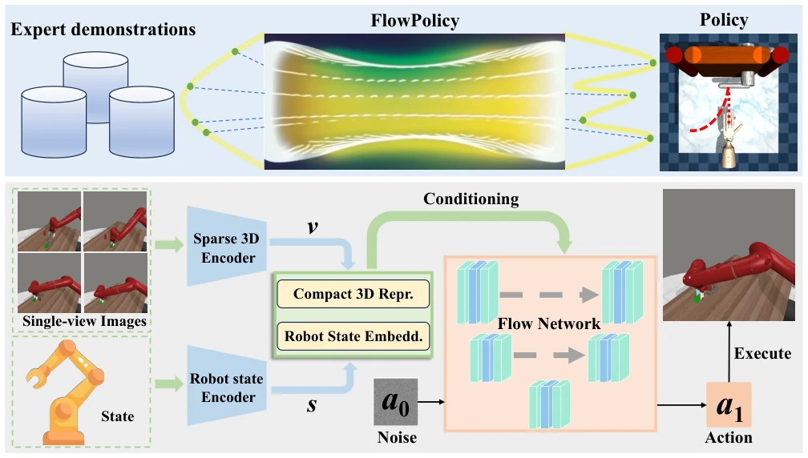
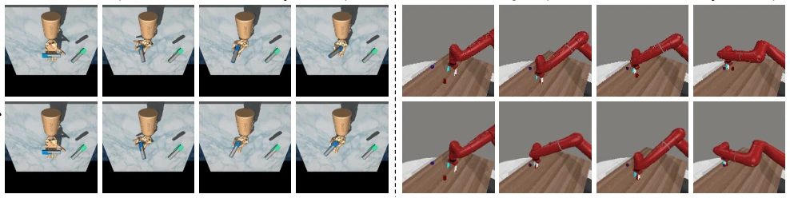
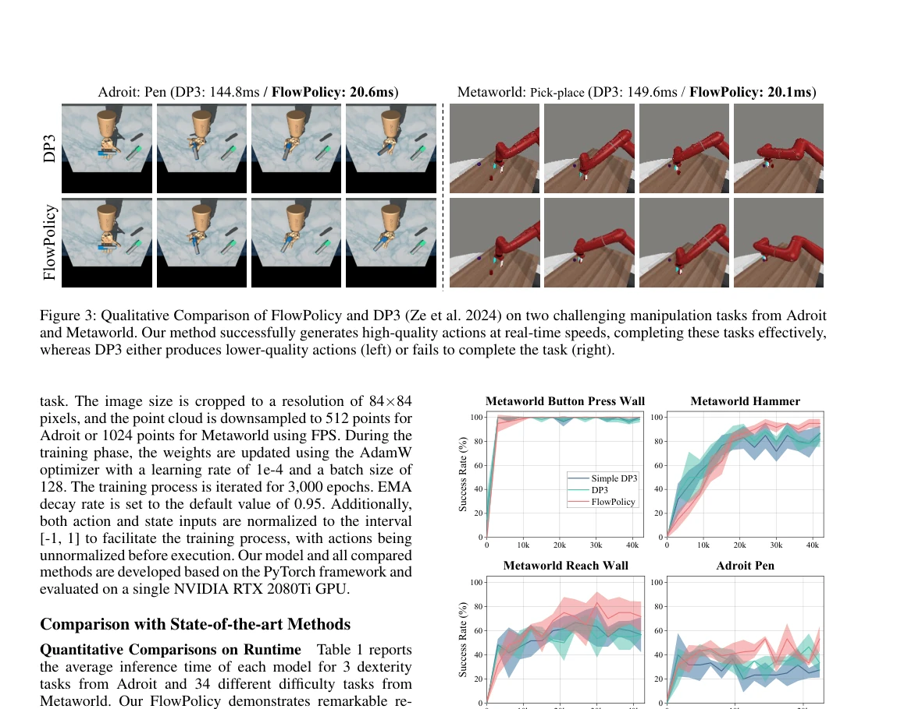
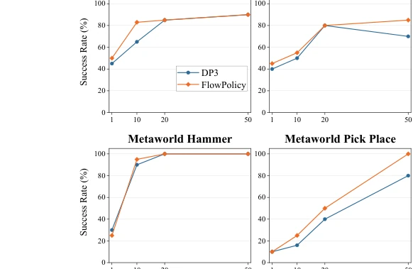

FlowPolicy 这活儿干得挺利索，直接把 3D 扩散策略的推理时间砍了 7 倍，从 145ms 降到 20ms 左右，这在实时控制里确实是个大进步。不过，本质上它就是把 DP3 的采样器换成了 Consistency Flow Matching，属于“换汤不换药”的优化。虽然作者吹嘘“一步生成”，但在复杂操作任务里，这种确定性采样是否真的能覆盖所有多模态动作分布，还有待观察。毕竟仿真环境里的 7 倍速，到了真机上会不会因为噪声敏感而翻车？实验里成功率和 DP3 持平甚至略高，说明一致性流匹配在 3D 点云条件上确实比纯扩散更稳，但“鲁棒性”这个词在 Embodied AI 里太容易被滥用，建议别急着上真机，先看看长尾场景的表现。
FlowPolicy executes this task quite proficiently, directly cutting the inference time of 3D diffusion policies by 7 times, from 145ms down to around 20ms, which indeed represents a significant advancement in real-time control. However, essentially, it merely replaces DP3's sampler with Consistency Flow Matching, constituting an optimization that is "changing the soup but not the medicine." Although the authors boast of "one-step generation," whether this deterministic sampling can truly cover all multimodal action distributions in complex manipulation tasks remains to be observed. After all, will the 7x speedup in simulation environments fail on real robots due to noise sensitivity? In experiments, the success rate is comparable to or slightly higher than DP3, indicating that consistency flow matching is indeed more stable than pure diffusion under 3D point cloud conditions, but the term "robustness" is too easily abused in Embodied AI; it is suggested not to rush to real-robot deployment, but first examine performance in long-tail scenarios.
研究动机Motivation
现有的基于扩散的策略学习（如 Diffusion Policy, Chi et al. 2023）虽然能捕捉多模态动作分布，但推理时需要多次采样，导致延迟高，难以满足实时控制需求。3D 扩散策略（DP3, Ze et al. 2024）虽然提升了空间感知能力，但同样受困于递归采样的效率瓶颈。Flow Matching 虽然理论上更稳定且快，但标准 FM 仍需多步。最近提出的 Consistency Flow Matching (Yang et al. 2024) 支持一步生成，但在具身智能中结合复杂 3D 视觉条件的研究尚属空白。本文旨在解决效率与质量的权衡，填补 3D 条件下一致性流匹配在机器人操作中的空白，实现实时解码。
Existing diffusion-based policy learning (such as Diffusion Policy, Chi et al. 2023) can capture multimodal action distributions, but inference requires multiple samplings, resulting in high latency and difficulty in meeting real-time control requirements. 3D diffusion policies (DP3, Ze et al. 2024) improve spatial perception capabilities, but are also trapped by the efficiency bottleneck of recursive sampling. Although Flow Matching is theoretically more stable and faster, standard FM still requires multiple steps. The recently proposed Consistency Flow Matching (Yang et al. 2024) supports one-step generation, but research combining it with complex 3D visual conditions in embodied intelligence remains an empty field. This paper aims to address the trade-off between efficiency and quality, fill the gap of consistency flow matching in robot manipulation under 3D conditions, and achieve real-time decoding.
方法Method
FlowPolicy 整体流程分为视觉编码与策略生成两部分。首先，将单视角深度图转换为 3D 点云，经 FPS 下采样后通过轻量 MLP 编码为紧凑的 3D 视觉表征，并与机器人状态嵌入拼接。核心创新在于采用条件一致性流匹配（Conditional Consistency Flow Matching）作为策略生成器。不同于传统扩散模型，该方法直接定义从噪声到动作空间的直线流（Straight-line Flow），通过速度一致性损失（Velocity Consistency Loss）约束速度场，使得模型能在单次推理中完成去噪。此外，引入多段训练（Multi-segment Training）机制，将时间步划分为多个片段分别优化，既保证了速度一致性，又提升了轨迹生成的灵活性。最终，模型通过一条直线轨迹将高斯噪声直接映射为机器人动作序列，实现了 NFE=1 的实时推理。该设计避免了传统扩散模型所需的迭代采样，显著降低了计算开销，同时利用 3D 点云的空间信息增强了策略的泛化能力。
The overall pipeline of FlowPolicy is divided into two parts: visual encoding and policy generation. First, single-view depth maps are converted into 3D point clouds, downsampled via FPS, and encoded into compact 3D visual representations through a lightweight MLP, which are then concatenated with robot state embeddings. The core innovation lies in adopting Conditional Consistency Flow Matching as the policy generator. Unlike traditional diffusion models, this method directly defines a Straight-line Flow from noise to the action space, constraining the velocity field through Velocity Consistency Loss, enabling the model to complete denoising in a single inference. Furthermore, a Multi-segment Training mechanism is introduced, dividing time steps into multiple segments for separate optimization, which ensures velocity consistency while improving the flexibility of trajectory generation. Finally, the model maps Gaussian noise directly to robot action sequences through a straight-line trajectory, achieving NFE=1 real-time inference. This design avoids the iterative sampling required by traditional diffusion models, significantly reducing computational overhead, while utilizing the spatial information of 3D point clouds to enhance the generalization ability of the policy.

Figure 2: Overall pipeline. The top section visualizes FlowPolicy, where a straight-line flow enables the fastest data transition from the noise distribution to the action distribution (Adroit: Open the door). The bottom section shows the details of Flow- Policy: expert demonstrations are converted to 3D point clouds, which, along with the robot state, are encoded into compact 3D visual representations and state embeddings. A straight-line flow is then learned via conditional consistency flow matching, generating high-quality actions for tasks (Metaworld: Assembly) at real-time inference speed.
Evaluation was conducted on 37 simulation tasks in Adroit and Metaworld. Baselines include 2D DP, Adaflow, CP, as well as 3D DP3 and Simple DP3. Evaluation metrics cover inference time (ms), success rate, and number of function evaluations (NFE). Results show that FlowPolicy's average inference time is only 19.9ms, 7 times faster than DP3 and 3 times faster than Simple DP3, with a success rate comparable to DP3 (average 70.0% vs 68.7%). Ablation experiments indicate that increasing the number of expert demonstrations can improve performance, and FlowPolicy is less prone to performance bottlenecks when data is sufficient. Qualitative comparison reveals that FlowPolicy is more precise than DP3 in complex operations (such as Pen-turning) and can complete Pick-Place tasks where DP3 fails. Learning curves also demonstrate that its training stability is superior to the DP3 baseline.

Figure 3: Qualitative Comparison of FlowPolicy and DP3 (Ze et al. 2024) on two challenging manipulation tasks from Adroit and Metaworld. Our method successfully generates high-quality actions at real-time speeds, completing these tasks effectively, whereas DP3 either produces lower-quality actions (left) or fails to complete the task (right).

Figure 4: Illustrations of the learning curves. Compared to Simple DP3 and DP3, FlowPolicy demonstrates higher sta- bility, learning efficiency, and success rates.

Figure 5: Ablation on the number of expert demonstrations. We choose four typical tasks to explore the impact of dif- ferent numbers of demonstrations on FlowPolicy and DP3. Both generally improve the accuracy with more demonstra- tions, but FlowPolicy typically has a higher success rate and avoids the performance bottleneck as presented in DP3.